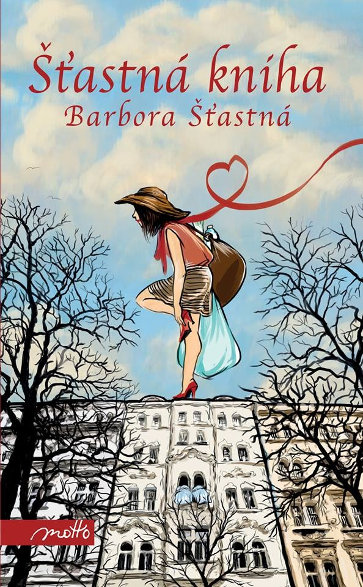

Autor: Barbora Šťastná
Žánr: Humor
Taky vás někdy napadlo, že byste chtěli změnit svůj život? Odjet meditovat do Indie? Chovat bio ovce na Šumavě? Zachraňovat děti v Africe? Pracovat v baru na středomořské pláži? Taky mě to napadlo, ale, upřímně řečeno... nechtělo se mi. Místo toho jsem vyzkoušela různé způsoby, jak být šťastnější, a přitom si nechat svůj život takový, jaký je: s manželem a dvěma dětmi, s bytem na hypotéku a normální pracovní dobou. A zjistila jsem, že štěstí si nechci schovávat na Vánoce, na dovolenou nebo na někdy jindy.
„Šťastná kniha je souhrnem několika kapitol z autorčina života. Vypráví o radostech běžného dne, o hledání potěšení tam, kde na první pohled není vidět. To vše úžasně zábavnou formou. Hladivý fejetonový styl protkaný spoustou vtipných pasáží čtenáři dokáže opravdu uhranout. Určitě se několikrát se přistihnete, jak se naprosto nekontrolovatelně usmíváte!“ - klubknihomolu.cz
Barbora Podzimková

Velké plus ode mě kniha získává především za to, že se nejedná o žádný vymazlený návod na šťastný život, ale že je čistě ze života autorky, která jde bez skrupulí s kůží na trh. Přesto mi tam některé pasáže trochu neseděly a přišly mi psané na efekt a občasné výzkumy vědců a psychologů lezly krkem. Jinak se ale jedná o pohodové oddychové čtení, které neurazí ani nenadchne.